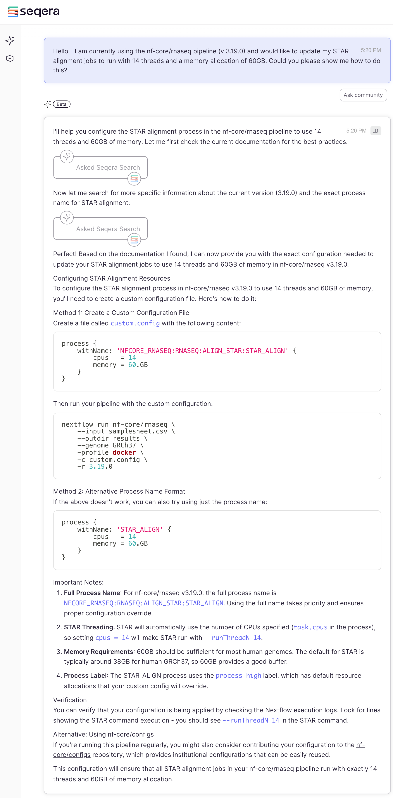
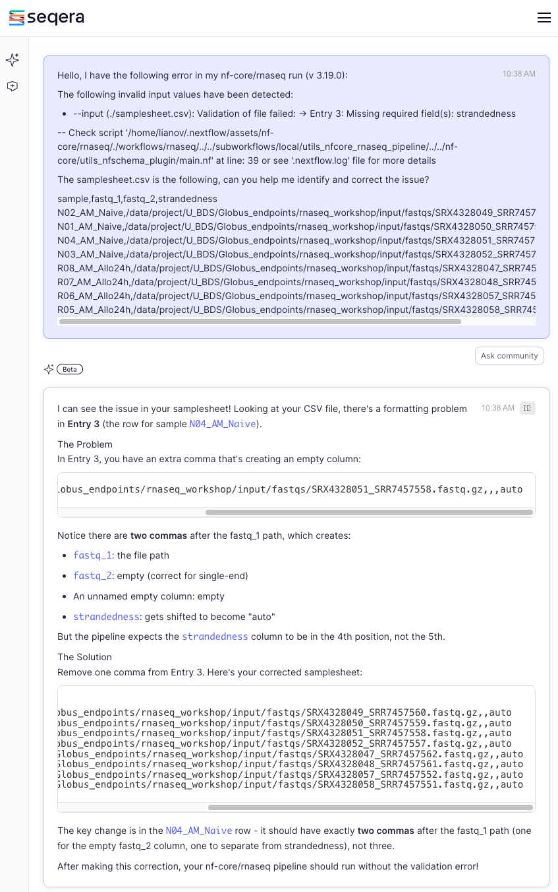
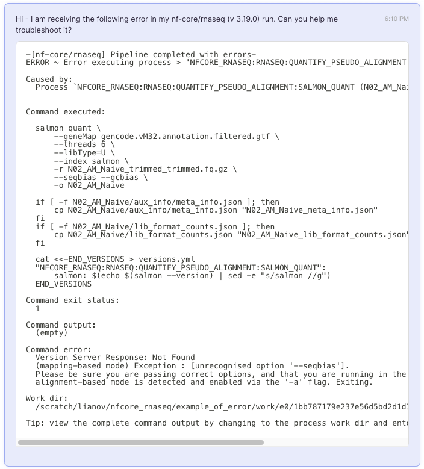
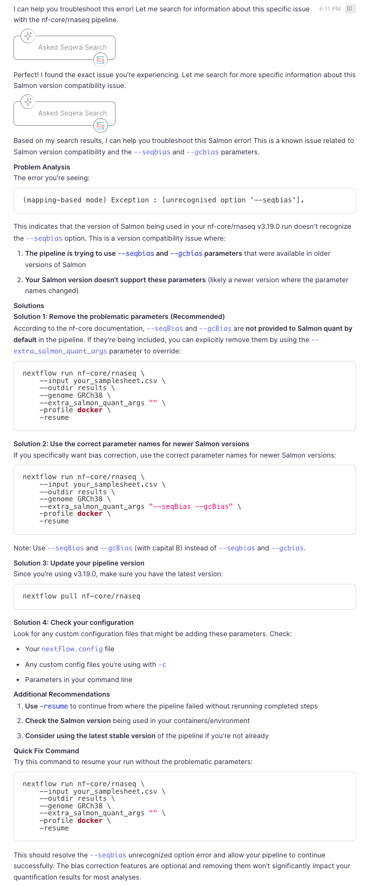
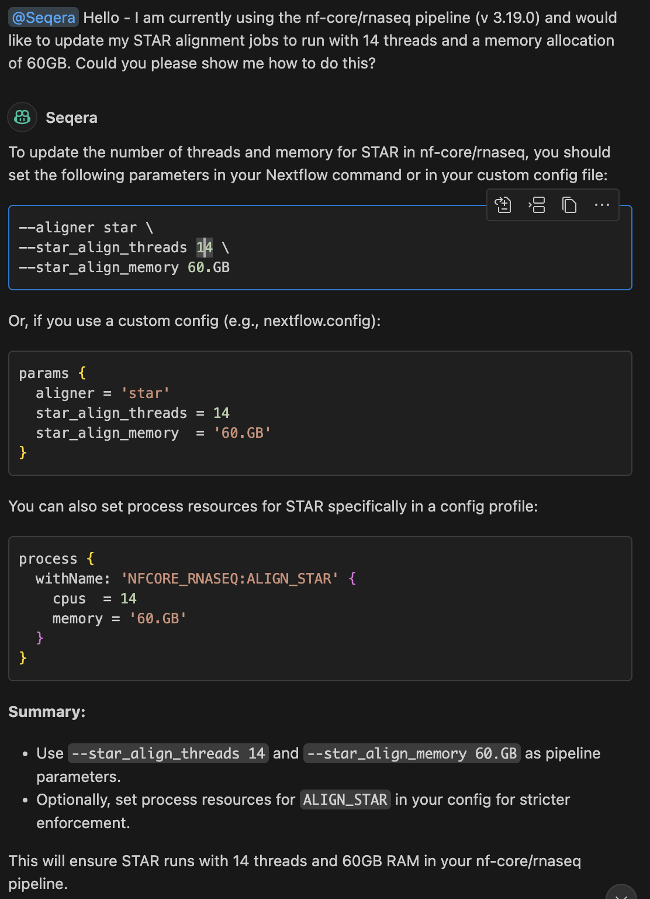
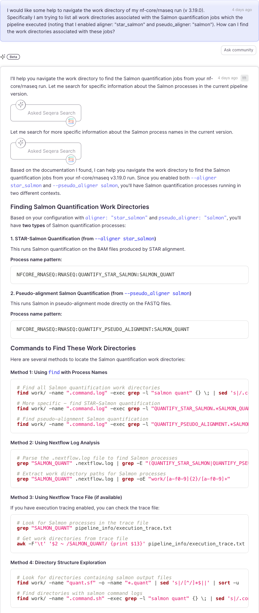

Discussion Question
How many of you have used AI to aid you in learning bioinformatics? What are some pros and cons?
Seqera AI is a bioinformatics-focused assistant designed for all stages of Nextflow development. Unlike general AI coding tools, it’s tightly integrated with Nextflow best practices and nf-core standards. It can suggest validated pipelines, generate DSL2-compliant Nextflow code, execute tests, help users troubleshoot error messages and much more.
Currently Seqera AI can be used in two ways: 1. Through the online platform, https://seqera.io/ask-ai/chat (note that the free version is limited to 100 chats per month) 2. Through the Nextflow VS Code extension.
Here is a brief summary of some common use cases for each AI platform:
Seqera AI online
Nextflow VS Code Extension
A more in-depth overview can be found at the following links:
Something to take note of is that the behavior of each platform may slightly differ. We find that the online platform is great for more in-depth answers, learning, exploration and understanding concepts, while the VS Code extension is better for context-specific support during active development. Therefore, they complement each other.
For the purposes of this workshops, the example below used the Seqera AI online.
A key strength of Nextflow, is its high level of modularity. While an in-depth overview of this topic is beyond the scope of this workshop, a common use-case is the ability of over-writing pipeline defaults with a custom configuration file.
An example of a custom configuration file which has already been used
in our example run is the cheaha profile. The key
distinction between an institutional profile and a custom configuration
file lies in how they are managed and accessed. Institutional profiles
are centrally hosted and maintained, making them easily accessible as
shared resources. They are enabled using the -profile flag.
In contrast, custom configuration files are local to the user’s
environment and must be explicitly provided with the -c
flag. Essentially, institutional profiles simplify access and ensure
consistency across users, while custom configs offer flexibility for
local customization.
With that in mind, some common use cases where a custom configuration file is needed includes request for increased computational resources and/or custom parameters for the underlying tools of the pipeline.
As an example, let’s assume that we would like to increase the
threads and decrease the memory requirements for the STAR.
How do you do this? Seqera AI can help:

Note that we have specified the version of the pipeline which was used in the example run for this workshop. This specific context can aid the AI in providing more refined answers.
The answer provided a detailed description, and an alternative
approach should method 1 not work. It also provided a sample run
command, but to adapt the answer to our run_rnaseq.sh, you
would need to simply include the -c custom.config to our
existing script:
#!/usr/bin/env bash
#SBATCH --job-name=nfcore_rnaseq
#SBATCH --output=nfcore_rnaseq.out
#SBATCH --error=nfcore_rnaseq.err
#SBATCH --time=12:00:00
#SBATCH --partition=short
#SBATCH --mem-per-cpu=5000
#SBATCH --cpus-per-task=1
# load environment
module load Anaconda3
conda activate $USER_SCRATCH/conda_envs/nfcore_workshop
# run workflow
nextflow run nf-core/rnaseq \
--outdir ./results \
-profile cheaha \
-r 3.19.0 \
-params-file ./params.yml \
-c custom.config ## custom configImportantly it also provided a great tip - to verify
that your modified configuration is actually being applied. Indeed the
best approach to do this is check the STAR command in this
case. With that in mind let’s move forward to the next example where AI
can also be helpful.
Our pipeline executed successfully. While it would be ideal if every run worked flawlessly, errors are sometimes inevitable. Fortunately, Seqera AI can assist in diagnosing and resolving these issues. Below, we present two example scenarios where we intentionally introduced errors to demonstrate how Seqera AI can help troubleshoot and guide the resolution process.
In a new run, we have encountered the following error (this can be
seen in .nextflow.log):
The following invalid input values have been detected:
* --input (./samplesheet.csv): Validation of file failed:
-> Entry 3: Missing required field(s): strandedness
-- Check script '/home/lianov/.nextflow/assets/nf-core/rnaseq/./workflows/rnaseq/../../subworkflows/local/utils_nfcore_rnaseq_pipeline/../../nf-core/utils_nfschema_plugin/main.nf' at line: 39 or see '.nextflow.log' file for more detailsAt at first glance this indicates that strandedness is
missing from our samplesheet. Let’s take a look:
sample,fastq_1,fastq_2,strandedness
N02_AM_Naive,/data/project/U_BDS/Globus_endpoints/nf-core_workshop/input/fastqs/SRX4328049_SRR7457560.fastq.gz,,auto
N01_AM_Naive,/data/project/U_BDS/Globus_endpoints/nf-core_workshop/input/fastqs/SRX4328050_SRR7457559.fastq.gz,,auto
N04_AM_Naive,/data/project/U_BDS/Globus_endpoints/nf-core_workshop/input/fastqs/SRX4328051_SRR7457558.fastq.gz,,,auto
N03_AM_Naive,/data/project/U_BDS/Globus_endpoints/nf-core_workshop/input/fastqs/SRX4328052_SRR7457557.fastq.gz,,auto
R08_AM_Allo24h,/data/project/U_BDS/Globus_endpoints/nf-core_workshop/input/fastqs/SRX4328047_SRR7457562.fastq.gz,,auto
R07_AM_Allo24h,/data/project/U_BDS/Globus_endpoints/nf-core_workshop/input/fastqs/SRX4328048_SRR7457561.fastq.gz,,auto
R06_AM_Allo24h,/data/project/U_BDS/Globus_endpoints/nf-core_workshop/input/fastqs/SRX4328057_SRR7457552.fastq.gz,,auto
R05_AM_Allo24h,/data/project/U_BDS/Globus_endpoints/nf-core_workshop/input/fastqs/SRX4328058_SRR7457551.fastq.gz,,autoAs you can see every sample does have auto indicated, so
what is the issue?
Discussion Question
Let’s spend a minutes looking over this file to see if you can spot the issue.
Now let’s see if Seqera AI can help us as well:

By providing the error and the samplesheet, Seqera AI was able to spot the issue right away. It provided an explanation along with the corrected samplesheet.
Let’s try another example. In this new run, we are now receiving the following error:
-[nf-core/rnaseq] Pipeline completed with errors-
ERROR ~ Error executing process > 'NFCORE_RNASEQ:RNASEQ:QUANTIFY_PSEUDO_ALIGNMENT:SALMON_QUANT (N02_AM_Naive)'
Caused by:
Process `NFCORE_RNASEQ:RNASEQ:QUANTIFY_PSEUDO_ALIGNMENT:SALMON_QUANT (N02_AM_Naive)` terminated with an error exit status (1)
Command executed:
salmon quant \
--geneMap gencode.vM32.annotation.filtered.gtf \
--threads 6 \
--libType=U \
--index salmon \
-r N02_AM_Naive_trimmed_trimmed.fq.gz \
--seqbias --gcbias \
-o N02_AM_Naive
if [ -f N02_AM_Naive/aux_info/meta_info.json ]; then
cp N02_AM_Naive/aux_info/meta_info.json "N02_AM_Naive_meta_info.json"
fi
if [ -f N02_AM_Naive/lib_format_counts.json ]; then
cp N02_AM_Naive/lib_format_counts.json "N02_AM_Naive_lib_format_counts.json"
fi
cat <<-END_VERSIONS > versions.yml
"NFCORE_RNASEQ:RNASEQ:QUANTIFY_PSEUDO_ALIGNMENT:SALMON_QUANT":
salmon: $(echo $(salmon --version) | sed -e "s/salmon //g")
END_VERSIONS
Command exit status:
1
Command output:
(empty)
Command error:
Version Server Response: Not Found
(mapping-based mode) Exception : [unrecognised option '--seqbias'].
Please be sure you are passing correct options, and that you are running in the intended mode.
alignment-based mode is detected and enabled via the '-a' flag. Exiting.
Work dir:
/scratch/lianov/nfcore_rnaseq/example_of_error/work/e0/1bb787179e237e56d5bd2d1d38c07b
Tip: view the complete command output by changing to the process work dir and entering the command `cat .command.out`Let’s break this down first, identify the message that points to the error and then see if Seqera AI could have also helped us.
NFCORE_RNASEQ:RNASEQ:QUANTIFY_PSEUDO_ALIGNMENT:SALMON_QUANT (N02_AM_Naive)salmon quant command which compiles the
pipeline parameters along with any user-provided changes.salmon developers created very
user-friendly errors for this type of issue, where it clearly states
that --seqbias is not an option.With --seqbias identified as the issue, what is the
solution? One point to bear in mind is case-sensitivity.
--seqbias failed because the proper parameter is
--seqBias (note the capitalized B).
Let’s see if Seqera AI could have helped us with this error as well:


As expected it solved the issue and provided additional helpful information, including:
--gcBias instead of
--gcbias)-resume which enables
Nextflow to start the new pipeline run where it failed (instead of from
scratch)It did also suggest to remove these flags since they are not turned on by default. This suggestion is one where each user needs to consider it on a case by case basis. Pipeline developers typically set sensible defaults, but there are instances where enabling non-default parameters is best. Our recommendation to anyone using nf-core pipelines is to also become familiar with the underlying methods and tools - this will enable you to make the best decisions for your own data and use cases. After checking the documentation of a tool, if you have questions about specific parameters you can ask Seqera AI for help and/or the nf-core community in Slack for their input. There are also resources available online including the open-source repository for each tool (e.g.: search open/closed issues or discussions).
While Seqera AI is a powerful tool to help you in running nf-core pipelines and programming in Nextflow, there are some important limitations to keep in mind as you use Seqera AI (and other AI tools such as ChatGPT).
Seqera AI is still susceptible to hallucinations. Hallucinations occur when an AI confidentially answers a prompt with either incorrect or entirely fabricated information. For example, we used the same prompts above and entered them into the Seqera AI extension for VSCode and received the following answers:

Now as you can see the Seqera AI extension generated a response that
is not entirely correct. While the last method it provided of creating a
custom configuration profile is correct, the first two methods are
entirely incorrect. The nf-core/rnaseq pipeline does not contain the
--star_align_threads or --star_align_memory
parameters, meaning these have been hallucinated.
Another consideration when using AI tools is that responses are not reproducible. AI models generate responses based on probabilistic predictions, which means that the same question asked multiple times can yield different responses. This variability can make it difficult to consistently validate or rely on a solution given by AI. To demonstrate this, we entered one of the questions above into the Seqera AI web interface again and received this response:

As you can see, even though this is the exact prompt used above, the
response is slightly different. Most notably, a description of
nextflow log is absent from the response, which is a much
easier and scalable method of obtaining information about a Nextflow
run.
Overall, Seqera AI is a powerful tool to use when working with Nextflow and nf-core, whether you are running a pre-built pipeline or developing your own. Because it is trained on a focused and domain-specific dataset, it often provides more relevant and accurate suggestions than generalized tools such as ChatGPT.
However, much like other AI tools, it still suffers from hallucinations and can produce inconsistent or unreproducible responses. Therefore, we recommend always double-checking any response or command generated by Seqera AI (or any other AI, for that matter). You can cross-reference responses you receive with the official nf-core documentation and community resources such as the Slack workspace or GitHub discussions.
Ultimately, Seqera AI should be seen as a helpful assistant. Use it to accelerate your work, but don’t let it be your sole source of information.